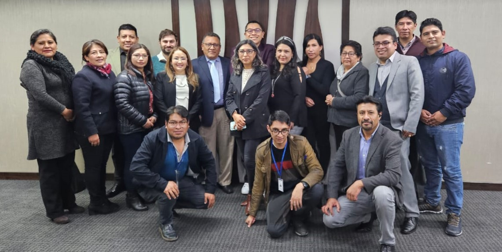
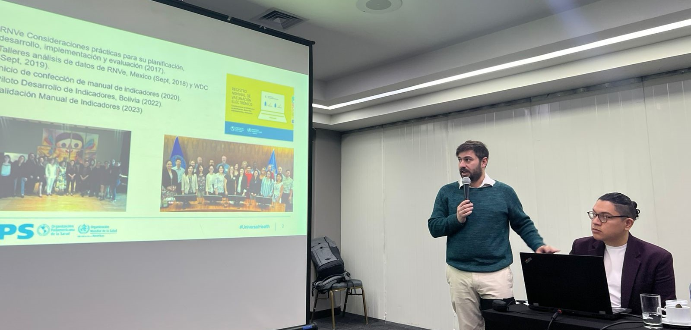
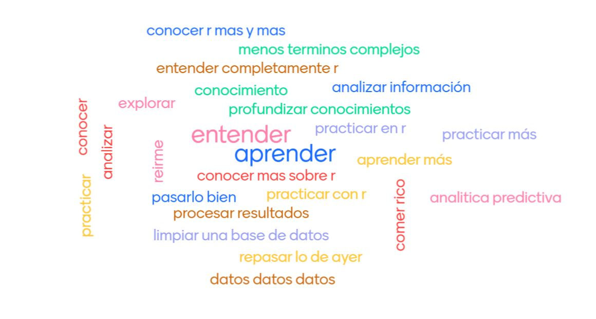

Introducción
Contexto
El Programa Especial de Inmunización Integral (CIM) de la Organización Panamericana de la Salud (OPS) junto con la representación de la OPS en Bolivia desarrollaron una actividad de transferencia de conocimiento de análisis de datos, usando el software R, para mejorar la calidad del dato de Registro Nominales de Vacunación electrónicos (RNVe). Esta actividad se llevó a cabo entre los días 8 al 10 de agosto de 2023, en la sede de la OPS en La Paz, Bolivia.
El principal objetivo de esta actividad fue realizar la transferencia de conocimiento para desarrollar análisis de calidad del dato del Registros Nominal de Vacunación electrónico del Estado Plurinacional de Bolivia usando el software R y su entorno. Además, de dar continuación a lo trabajado en conjunto con el Programa Ampliado de Inmunización de Bolivia durante el segundo semestre del año 2022 sobre análisis de indicadores de desempeño de los programas de inmunización basado en datos del RNVe.
En el taller participaron profesionales del programa nacional de inmunización del país, encragados de inmunización de la represetación del país y consutltores de CIM-PAHO.
Foto de grupo

Participantes
Los participantes del taller fueron: Carlos Echazú (Gestor de Calidad PAI Nacional) Teresa Bonifaz (Gestora de Calidad PAI Nacional) Claudia Carrisalez (Responsable PAI Nacional) Wendy Cepeda (Gestora de Calidad PAI Nacional) Pamela Callisaya (Gestora de Calidad PAI Nacional) Juaquin Gironda (Técnico en Logística) Grisel Villalta (PAI Nacional) Alvaro Choque (PAI Nacional) Arturo Bejarano (Mesa Ayuda RNVe; Potosí, Chuquisaca y Tarija) Brandon Zapata (Mesa Ayuda RNVe, Beni) Karen Chura (Mesa Ayuda RNVe, La Paz) Yenny Neira (OPS/OMS) Leslie La Torre (OPS/OMS) Yecid Coya Huarita (Tecnico Direccion General de Epidemiologia) Betty Choque Quispe (PAI Nacional) Claudia Bernal (Técnico Snis/Ve) Oswaldo Ajuacho (Técnico Snis/Ve) Jose Luis Villazante Quispe (Técnico Snis/Ve) Max Enriquez (Viceministro de Promoción, Vigilancia Epidemiológica y Medicina Tradicional) Mary Quintanilla (Gestora de Calidad PAI Nacional).
Facilitadores
Los facilitadores del taller fueron: Rafael León (OPS/OMS) e Ignacio Castro (OPS/OMS).

Metodología
Se analizaron indicadores propuestos por la OPS/OMS en el manual “Más Allá de la Cobertura”. El manual se compone de indicadores organizados en tres ámbitos: (i) Puesta en Marcha y Operación, (ii) Calidad del Dato y (iii) Uso de Datos. Los indicadores de Calidad del Dato, desarrollados durante el taller, se organizan en 4 componentes: (i) Unicidad, (ii) Completitud, (iii) Consistencia y (iv) Oportunidad.
Se utilizaron la base de datos de vacunación de rutina aportadas por el país con fecha de corte de julio de 2022. Los análisis fueron realizados utilizando el software libre R.
Este documento, que resume lo realizado durante el taller, también fue realizado utilizando paquetes asociados al entorno de R.
¿Cuáles son las expectivas del curso de los participantes?
